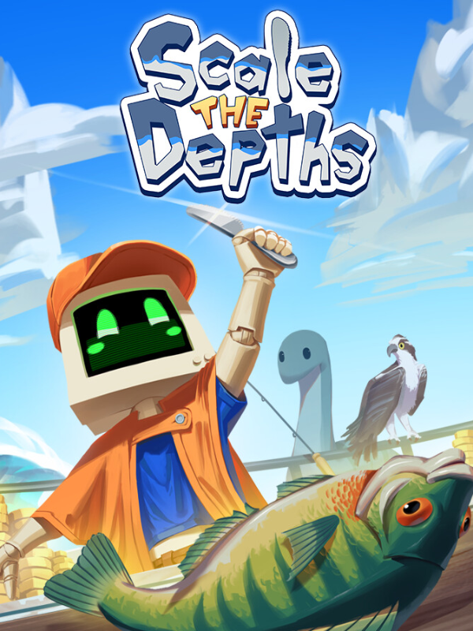

Scale the Depths
Scale the Depths
Details
 |
|
| Playtime | 4h 19m 0s |
| Last Activity | 2026-07-17 13:25:00 |
| Added | 2026-08-21 17:24:56 |
| Modified | 2026-08-21 17:25:26 |
| Completion Status | Played |
| Library | Steam |
| Source | Steam |
| Platform | PC (Windows) |
| Release Date | 2026-05-28 |
| Community Score | |
| Critic Score | |
| User Score | |
| Genre | Indie Simulator |
| Developer | Glass Gecko Games |
| Publisher | Pretty Soon |
| Feature | Single Player |
| Links | Steam Official Website Twitch YouTube Discord |
| Tag | 2D Arcade Casual Colorful Cooking Cute Economy Exploration Fishing Funny Incremental Indie Linear Management Pixel Graphics Relaxing Resource Management Simulation Singleplayer Underwater |
Description

Catching fish is only the beginning.
Cast your line, hunt for the perfect catch, scale it with care, serve it to hungry customers, and turn your hard-earned cash into better gear. Then go deeper. Catch stranger fish. Make more money. Upgrade again.
You know, just one more run.
Each improvement pushes you further into the depths… and further from whatever counts as normal.


Explore four distinct fishing spots inspired by real places – from Loch Ness to Outer Banks, Point Nemo, and beyond.
Each location comes with its own:
atmosphere and environment
gear
fish species
hidden paths and secrets
puzzles, treasures, and strange things waiting below
The deeper you go, the less this feels like a simple fishing job.


Your customers are not human. Some are cute. Some are mythical. Some are exactly the kind of creatures you wouldn’t expect to order dinner from a tiny robot on a boat.
Serve wild animals like otters, axolotls, and herons, alongside beings inspired by myth and folklore, including legends such as Nessie and Kelpie. Each customer has their own personality, appetite, and favorite fish.
Learn who likes what, deliver the right catch, and you might earn a very generous tip. Serve badly, and… well, they’ll have opinions.


There’s more than fish hiding underwater, and definitely more lore than anyone reasonably expects from a game about fishing.
Search the depths for:
hidden treasures and collectible artifacts
messages in bottles
secret passages
environmental puzzles and levers
Every scrap of old notes and logs brings you a little closer to understanding why this tiny robot is busy fishing in the first place.


Progress isn’t just about bigger numbers (although bigger numbers are very nice).
Upgrade your fishing gear, unlock better tools, customize your boat, and dress up your tiny robot fishmonger before sending them back into increasingly strange waters.
Improve your rods, hooks, bags and scaling tools
Unlock new boats and cosmetics
Scale tiny fish with increasingly ridiculous tools
Look good while feeding ancient beings from the deep
Because if you’re going to prepare fish for strange creatures, you might as well do it in style.